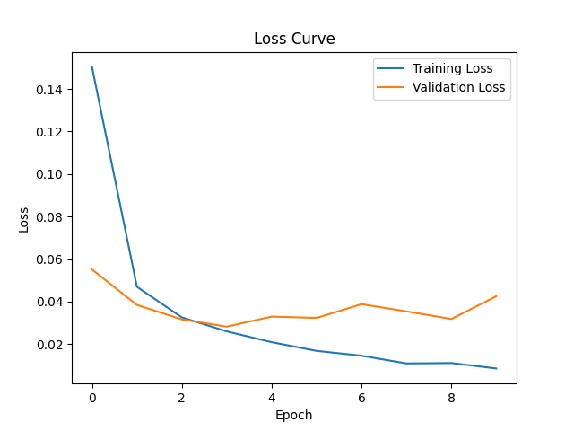
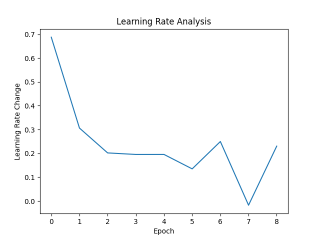
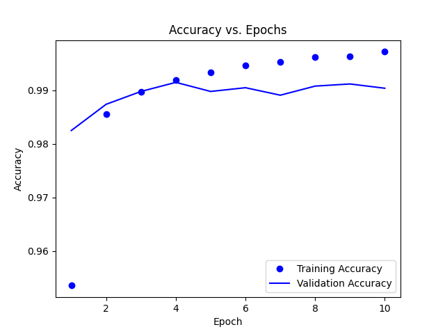

Adam optimization is a popular optimization algorithm used in machine learning, particularly for training deep neural networks. It combines ideas from both momentum-based optimization and adaptive learning rate methods to efficiently update model parameters during training.



Observations from Model Training
Training and Validation Accuracy: The training accuracy steadily increases over epochs, indicating effective learning. However, validation accuracy shows slight fluctuations, suggesting potential overfitting.
Training and Validation Loss: Training loss consistently decreases, indicating effective optimization. Validation loss decreases initially but fluctuates later, similar to validation accuracy.
Epoch Duration: Duration of each epoch varies, generally decreasing over time. Fluctuations may be influenced by factors like batch size and model complexity.
Final Accuracy and Loss: Final training accuracy and loss are high and low, respectively, indicating good convergence. Validation metrics also show promising performance.
Overall, the model trained with the Adam optimizer shows promising performance, achieving high accuracy and low loss on both training and validation datasets. However, further analysis, such as learning rate analysis and convergence speed, can provide additional insights into the optimizer's behavior and performance.
Applications of Adam Optimization
Image Classification: Classifying images into different categories, such as identifying objects in photos or recognizing handwritten digits.
Object Detection: Locating and identifying objects within images or video frames, often used in surveillance, autonomous vehicles, and medical imaging.
Natural Language Processing (NLP): Analyzing and generating human language, including tasks like sentiment analysis, machine translation, and text summarization.
Speech Recognition: Converting spoken language into text, enabling applications like virtual assistants, voice-controlled devices, and speech-to-text transcription.
Recommendation Systems: Personalizing recommendations for users based on their preferences and behavior, commonly seen in e-commerce platforms, streaming services, and social media platforms.
Generative Models: Generating new data samples, such as images, text, or audio, with applications in creative AI, art generation, and data augmentation for training models.
Healthcare: Analyzing medical images, diagnosing diseases, predicting patient outcomes, and assisting in drug discovery and development.
Role of Adam Optimization in Machine Learning Applications
Image Classification: In image classification tasks, Adam helps adjust the parameters of convolutional neural networks (CNNs) or other deep learning models to accurately classify images into different categories.
Object Detection: Adam optimization is essential for training object detection models, such as Faster R-CNN, YOLO, or SSD. These models rely on both classification and localization tasks to detect objects within images.
Natural Language Processing (NLP): In NLP tasks, including sentiment analysis, machine translation, and text generation, Adam optimization is used to train recurrent neural networks (RNNs), transformers, and other architectures.
Speech Recognition: Adam optimization is crucial for training deep learning models for speech recognition tasks, such as automatic speech recognition (ASR) systems.
Generative Models: In generative models like Generative Adversarial Networks (GANs) and Variational Autoencoders (VAEs), Adam optimization plays a key role in training the generator and discriminator networks.
Overall, Adam optimization contributes to the success of various machine learning applications by efficiently updating the parameters of deep learning models during training, leading to improved accuracy, robustness, and generalization performance in real-world scenarios.
How Adam Optimization Works
Initialize Parameters: First, we initialize the parameters of the model randomly or with pre-trained values. These parameters represent the weights and biases of the neural network or any other machine learning model.
Initialize Moments: Adam keeps track of two moments: the first moment (m) and the second moment (v). These moments are initialized to zero vectors of the same dimension as the parameters.
Compute Gradients: During training, we pass input data through the model to make predictions. We then compute the gradients of the loss function with respect to the parameters using backpropagation. These gradients indicate the direction and magnitude of the steepest ascent in the loss landscape.
Update First Moment (m): Adam calculates the first moment (m) of the gradients by taking a weighted average of the current gradients and the previous first moment. This accounts for the momentum of the gradients.
Update Second Moment (v): Similarly, Adam calculates the second moment (v) of the gradients by taking a weighted average of the squared gradients and the previous second moment. This accounts for the scaling of the gradients.
Bias Correction: Adam corrects the bias of the moments since they are initialized to zero. This is particularly important during the early stages of training when the moments are biased towards zero.
Update Parameters: Finally, Adam updates the parameters using the bias-corrected moments. It scales the learning rate for each parameter based on the first and second moments.
By following these steps iteratively for each batch of training data, Adam optimization efficiently updates the parameters of the model, leading to faster convergence and improved performance during training.
Analogies between Machine Learning and Relationships
Accuracy (ϵ): Ensures you really understand why your past relationship ended, without any confusion. Similarly, in machine learning, it ensures our model's predictions are really close to the actual outcomes, without tiny errors messing things up.
Learning Rate (α): Determines how quickly you learn and move forward from the breakup. A high α means you're ready to learn and grow quickly, while a low α means you're taking your time to heal and understand what went wrong. Similarly, in machine learning, α decides how fast our model learns from the data. A high learning rate means it learns quickly but might miss some details, while a low learning rate means it learns more slowly but gets a better overall understanding.
First Moment Decay (β1): Shows how much your past affects your decisions now. A high β1 means you're still thinking a lot about your past relationship, while a low β1 means you're focusing more on moving forward. Similarly, in machine learning, β1 reflects how much our model focuses on recent information. A high value means it mainly cares about what it's seen recently, while a low value means it considers older information too.
Second Moment Decay (β2): About how quickly you notice and adapt to changes after the breakup. A high β2 means you're quick to notice differences and adjust easily, while a low β2 means you might take longer to notice changes and adapt. Similarly, in machine learning, β2 determines how quickly our model adapts to new information. A high value means it adjusts quickly, while a low value means it takes its time to update its understanding.
Initial Values for m and v: Represents the starting point for our model's learning journey. High values mean the model starts with certain ideas, while low values mean it starts with a blank slate.
Batch Size: Determines how many experiences or interactions you handle at once after a breakup. A bigger batch size means you're dealing with more at once, while a smaller one means you're handling fewer at a time.
Number of Epochs: Represents how many times you need to go through something to fully understand it. More epochs mean it takes longer to understand, fewer mean it's quicker.
Regularization: Setting rules for yourself after a breakup to avoid making mistakes again. Like not calling your ex or not spending too much time dwelling on the past.
Decay Rates: How quickly you forget about the breakup and move on. A high rate means you move on fast, a low one means you hold onto the past longer.
Early Stopping: Recognizing when you've fully healed and are ready to move on from the breakup. It's about being self-aware and knowing when it's time to stop dwelling on the past and start focusing on the future.
Adam Optimization Algorithm
Mathematical Formulation:
Initialize: Initialize parameters θθ, momentum variables mm and vv, and set hyperparameters β1, ϵ.
Compute Gradient: Compute the gradient of the objective function with respect to the parameters θ.
Update Momentum: Update the first moment estimate:
mt=β1⋅mt−1+(1−β1)⋅gt
Update RMSprop: Update the second moment estimate:
vt=β2⋅vt−1+(1−β2)⋅(gt)2
Bias Correction: Correct the bias in the estimates:
m^t=mt1−β1t
v^t=vt1−β2t
Update Parameters: Update the parameters:
θt+1=θt−αv^t+ϵ⋅m^t
Intuition Behind Adaptive Learning Rates and Momentum:
Adaptive Learning Rates (RMSprop): Adam adapts the learning rate for each parameter based on the magnitude of its gradients. Parameters with large gradients get smaller updates, and parameters with small gradients get larger updates. This helps to overcome the problem of oscillations and slow convergence rates in traditional gradient descent methods.
Momentum: Momentum helps Adam to continue moving in the right direction even if the gradient changes direction frequently. It accumulates past gradients to determine the direction of updates. This helps to speed up convergence and escape from local minima.
Bias Correction: The bias correction step is necessary because mt and vt are initialized to zero and might be biased towards zero, especially during the early iterations. The bias correction adjusts these estimates to provide more accurate values.
In summary, Adam combines the benefits of adaptive learning rates (RMSprop) and momentum to efficiently optimize the parameters of a model. It adapts the learning rates for each parameter based on the magnitude of gradients and utilizes momentum to continue moving in the right direction, leading to faster convergence and better performance in training deep neural networks.
Simplified Explanation of Momentum and Bias Correction in Adam
Momentum:
Imagine you're pushing a heavy object, like a car. At first, it's hard to get it moving, but once it starts rolling, it's easier to keep it going.
In Adam, momentum is like the rolling motion of the car. It helps the optimization process to keep moving in the same direction even if the slope (gradient) changes.
Without momentum, the optimization process might get stuck or move slowly, especially in areas with flat or changing gradients.
Bias Correction:
Bias correction is like adjusting for a mistake you made in the past.
In Adam, when we estimate the first and second moments of the gradients (m and v), they start from zero. But at the beginning of training, these estimates might be biased towards zero.
So, we correct this bias by adjusting the estimates to give a more accurate representation of the gradients, especially during the early iterations of optimization.
In simpler terms, momentum helps keep the optimization process going smoothly, like the rolling motion of a heavy object, while bias correction corrects any initial mistakes in our estimates, ensuring they're more accurate throughout the training process.
Adam Optimization in Image Classification
Initialization: We start by initializing the parameters of our neural network, such as the weights and biases.
Training Data: We have a dataset consisting of images and their corresponding labels. For example, we might have images of cats and dogs along with labels indicating whether each image is of a cat or a dog.
Forward Pass: We pass each image through the neural network to get predictions. The neural network takes the pixel values of the image as input and produces a probability distribution over the possible classes (e.g., cat or dog).
Loss Calculation: We compare the predictions of the neural network with the actual labels using a loss function, such as cross-entropy loss. This tells us how good or bad our predictions are.
Backward Pass (Gradient Calculation): We compute the gradients of the loss function with respect to the parameters of the neural network using backpropagation. These gradients tell us how much each parameter needs to change to minimize the loss.
Adam Optimization: Here's where Adam comes in. We use the gradients calculated in the previous step to update the parameters of the neural network. Adam adjusts the learning rates for each parameter based on the magnitude of its gradients and incorporates momentum to keep the optimization process stable and efficient.
Repeat: We repeat steps 3-6 for multiple iterations or epochs, gradually improving the performance of the neural network.
Evaluation: After training, we evaluate the performance of the trained neural network on a separate dataset (validation or test set) to see how well it generalizes to new, unseen images.
Overall, Adam optimization helps us efficiently train neural networks for image classification tasks by adjusting the learning rates and incorporating momentum, leading to faster convergence and better performance compared to traditional optimization algorithms.
Hyperparameter Tuning for Adam Optimization
Hyperparameter tuning involves finding the best values for various parameters that are not learned during the training process but are set before the training begins. Here are some hyperparameters that can be tuned specifically for the Adam optimization algorithm:
Learning Rate (αα): This is the step size used to update the parameters of the neural network. It determines how big of a step is taken in the parameter space during optimization.
β1β1 (First Moment Decay): This hyperparameter controls the exponential decay rate for the first moment estimate (mean of gradients). It typically ranges between 0 and 1.
β2β2 (Second Moment Decay): Similar to β1β1, this hyperparameter controls the exponential decay rate for the second moment estimate (uncentered variance of gradients). It also typically ranges between 0 and 1.
Epsilon (ϵϵ): This is a small constant added to the denominator to prevent division by zero and to ensure numerical stability during parameter updates.
Initial Values for mm and vv: The initial values for the first and second moment estimates ( mm and vv ) can also be tuned, although they are typically initialized to zero.
Batch Size: The number of training examples used in each iteration of optimization. Larger batch sizes can lead to faster convergence but require more memory.
Number of Epochs: The number of times the entire training dataset is passed through the neural network during training. Tuning this parameter helps determine how long the training process should continue.
Regularization: Regularization parameters such as L1 or L2 regularization strengths can also be tuned to prevent overfitting.
Decay Rates: Some implementations of Adam also allow for tuning of the decay rates for the learning rate and momentum terms over time.
Early Stopping Criteria: Parameters related to early stopping, such as the patience (number of epochs with no improvement on the validation set before stopping) and the threshold for considering an improvement significant.
These are some of the key hyperparameters that can be tuned specifically for Adam optimization to improve the performance of neural network models in tasks like image classification.
Adam Optimization Algorithm
Initialization: Start with random or pre-trained parameters for the model.
Compute Gradients: Calculate the gradients of the loss function with respect to the parameters using backpropagation.
Update First Moment (m): Calculate a weighted average of the gradients and the previous first moment to account for momentum.
Update Second Moment (v): Calculate a weighted average of the squared gradients and the previous second moment to account for the scaling of the gradients.
Bias Correction: Correct the bias of the moments, particularly important during early training stages.
Update Parameters: Update the parameters using the bias-corrected moments and a scaled learning rate.
By iteratively following these steps for each batch of training data, Adam optimization efficiently adjusts the parameters of the model, leading to faster convergence and improved performance during training.
Adam Optimization Algorithm
Start: Begin with random or pre-set values for the model's parameters.
Calculate Changes: Look at how much the model needs to change based on the training data.
Adjust Momentum: Keep track of how fast the changes are happening and adjust accordingly.
Adjust Scaling: Also, keep track of how big the changes should be based on the past.
Correct Bias: Make sure our calculations are fair and not biased, especially at the beginning.
Make Updates: Finally, make the actual changes to the model's parameters based on all this information.
By doing these steps repeatedly for each batch of data, Adam optimization helps the model learn better and faster.
Machine Learning Concepts in Bike Riding
Accuracy (ϵ): Ensures you understand why you fell off the bike or lost balance, without any confusion. Similarly, in bike learning, accuracy ensures your understanding of how to balance and ride the bike is close to perfect, without any errors causing accidents.
Learning Rate (α): Determines how quickly you learn to ride the bike. A high α means you learn and adapt quickly, while a low α means you take your time to understand how to balance and pedal. Similarly, in machine learning, α decides how fast the model learns from bike riding experiences. A high learning rate means it learns quickly but might miss some nuances, while a low learning rate means it learns more slowly but gains a better understanding.
First Moment Decay (β1): Reflects how much your past experiences with bikes affect your current riding decisions. A high β1 means you're still thinking a lot about your past falls, while a low β1 means you're focusing more on mastering the current ride. Similarly, in machine learning, β1 reflects how much the model focuses on recent bike riding experiences. A high value means it mainly cares about recent rides, while a low value means it considers older rides too.
Second Moment Decay (β2): About how quickly you notice and adapt to changes while riding the bike. A high β2 means you quickly adjust to road conditions and obstacles, while a low β2 means you might take longer to react. Similarly, in machine learning, β2 determines how quickly the model adapts to new information while riding. A high value means it adjusts quickly, while a low value means it takes its time to update its riding techniques.
Initial Values for m and v: Represents your starting point in bike riding. High values mean you start with some bike riding experience, while low values mean you start as a complete beginner.
Batch Size: Determines how many bike riding attempts you make in one session. A bigger batch size means you practice more in one go, while a smaller one means you focus on fewer attempts at a time.
Number of Epochs: Represents how many times you need to practice bike riding to fully master it. More epochs mean more practice sessions needed, while fewer mean quicker mastery.
Regularization: Setting rules for yourself to avoid common mistakes while riding. Like not leaning too much to one side or remembering to brake before turns.
Decay Rates: How quickly you forget about past falls and focus on improving your bike riding skills. A high rate means you quickly overcome fears and improve, while a low rate means you might dwell on past mistakes.
Early Stopping: Recognizing when you've mastered bike riding and are ready to ride confidently without assistance. It's about being self-aware and knowing when it's time to stop relying on training wheels and start riding independently.
Machine Learning Concepts in Bike Riding
Accuracy (ϵ): Think of this like making sure you really understand why you fell off the bike or lost balance. Similarly, in bike learning, accuracy ensures you understand how to balance and ride the bike without any confusion or mistakes.
Learning Rate (α): This is about how quickly you pick up bike riding skills. A high α means you learn fast, while a low α means you take your time to understand. It's like deciding how fast you want to learn to ride a bike.
First Moment Decay (β1): Shows how much your past bike riding experiences affect your current decisions. A high β1 means you're still thinking a lot about past falls, while a low β1 means you're focusing more on mastering your current ride.
Second Moment Decay (β2): About how quickly you notice and adapt to changes while riding. A high β2 means you adjust quickly to obstacles, while a low β2 means you might take longer to react.
Initial Values for m and v: This is like your starting point in bike riding. High values mean you start with some experience, while low values mean you start as a beginner.
Batch Size: Determines how many times you practice riding in one go. More practice at once means a bigger batch size.
Number of Epochs: How many practice sessions you need to fully learn to ride. More sessions mean longer to learn, fewer mean quicker learning.
Regularization: Setting rules to avoid common mistakes while riding, like not leaning too much or remembering to brake.
Decay Rates: How quickly you forget about past mistakes and focus on improving. A high rate means you move on fast, a low rate means you dwell on past mistakes longer.
Early Stopping: Recognizing when you've mastered riding and can ride confidently without help. It's about knowing when it's time to stop practicing and start riding on your own.
Machine Learning Concepts in Bike Riding
Accuracy (ϵ): Think of this like making sure you really understand why you fell off the bike or lost balance. Similarly, in machine learning (ML), accuracy ensures our model's predictions are really close to the actual outcomes, without any confusion or mistakes.
Learning Rate (α): This is about how quickly you pick up bike riding skills. In ML, α decides how fast our model learns from the data. A high α means it learns quickly but might miss some details, while a low α means it learns more slowly but gets a better overall understanding.
First Moment Decay (β1): Shows how much your past bike riding experiences affect your current decisions. Similarly, in ML, β1 reflects how much our model focuses on recent information. A high value means it mainly cares about what it's seen recently, while a low value means it considers older information too.
Second Moment Decay (β2): About how quickly you notice and adapt to changes while riding. Similarly, in ML, β2 determines how quickly our model adapts to new information. A high value means it adjusts quickly, while a low value means it takes its time to update its understanding.
Initial Values for m and v: This is like your starting point in bike riding. In ML, these represent the initial state of parameters. High values mean the model starts with certain ideas, while low values mean it starts with a blank slate.
Batch Size: Determines how many times you practice riding in one go. In ML, it's the number of samples used in one iteration. More practice at once means a bigger batch size.
Number of Epochs: How many practice sessions you need to fully learn to ride. In ML, it represents the number of times the entire dataset is passed forward and backward through the model. More sessions mean longer to learn, fewer mean quicker learning.
Regularization: Setting rules to avoid common mistakes while riding, like not leaning too much or remembering to brake. Similarly, in ML, regularization helps prevent overfitting by adding a penalty to the loss function.
Decay Rates: How quickly you forget about past mistakes and focus on improving. In ML, decay rates control the rate at which the learning rate decreases during training.
Early Stopping: Recognizing when you've mastered riding and can ride confidently without help. Similarly, in ML, it's about knowing when to stop training to avoid overfitting or wasting computational resources.
Adam Optimization Hyperparameters
ϵ:
ϵ is a tiny number added to the denominator during parameter updates.
It prevents division by zero, ensuring numerical stability in the optimization process.
Without ϵ, there's a risk of encountering numerical issues, especially when the second moment estimate is close to zero.
Overall, ϵ makes sure that the optimization algorithm runs smoothly without encountering mathematical errors.
Learning Rate (α):
The learning rate (α) determines how big of steps the optimization algorithm takes during parameter updates.
A higher learning rate means larger steps, which can speed up convergence but may lead to overshooting the optimal solution.
Conversely, a lower learning rate means smaller steps, which can result in slower convergence but are more stable and less likely to overshoot.
Choosing the right learning rate is crucial for finding a balance between convergence speed and stability in optimization.
First Moment Decay (β1):
β1 controls how much the optimizer relies on past gradients when updating parameters.
A higher β1 means the optimizer gives more weight to past gradients, resulting in smoother updates.
Conversely, a lower β1 means the optimizer relies less on past gradients, leading to updates that are more sensitive to recent gradients.
Adjusting β1 allows us to control the influence of past gradients on the optimization process.
Second Moment Decay (β2):
β2 determines how much the optimizer focuses on recent changes in the magnitude of gradients.
A higher β2 means the optimizer pays more attention to recent changes, which can help adapt more quickly to changes in the optimization landscape.
Conversely, a lower β2 means the optimizer focuses less on recent changes, resulting in smoother updates.
Tuning β2 allows us to control how much importance the optimizer places on recent changes in gradient magnitude.
Adam Optimization Hyperparameters Explained Simply
ϵ: Think of ϵ as a tiny helper that prevents the optimizer from having trouble with math. It's like adding a drop of water to a cup of milk to make sure it doesn't overflow.
Learning Rate (α): The learning rate (α) decides how big of steps the optimizer takes while learning. If it's high, it's like taking big steps; if it's low, it's like taking smaller, careful steps.
First Moment Decay (β1): β1 tells the optimizer how much to remember about past gradients. A higher β1 means it remembers more, like how much you remember about yesterday's weather when predicting today's.
Second Moment Decay (β2): β2 is about how much the optimizer pays attention to changes in gradient size. A higher β2 means it's very sensitive to changes, like noticing even tiny changes in a friend's mood.
So, in simple terms, ϵ stops math problems, α decides step size, β1 controls memory about past gradients, and β2 decides how much to notice changes in gradient size. Adjusting these helps the optimizer work better.
Why Adam Optimization is Effective in Image Classification
Efficient Parameter Updates: Adam efficiently adjusts the model's parameters during training by optimizing the learning process. It adapts the learning rates for each parameter individually, preventing the model from getting stuck in local minima and speeding up convergence.
Adaptive Learning Rates: With Adam, the learning rates for each parameter are dynamically adjusted based on the magnitude of the gradients. This adaptability ensures that parameters with larger gradients receive larger updates, while parameters with smaller gradients receive smaller updates. This adaptive learning rate helps the model converge faster and more reliably.
Momentum: Adam incorporates momentum, which accelerates the optimization process by accumulating gradients from past iterations and using them to guide parameter updates. This helps to smooth out the optimization process and navigate through parameter space more efficiently.
Bias Correction: Adam performs bias correction to compensate for initialization bias and the scaling of exponential moving averages of gradients. This correction ensures more accurate updates of the parameters, especially in the early stages of training.
In summary, Adam optimization efficiently adjusts parameters, adapts learning rates, incorporates momentum, and performs bias correction, making it particularly effective for image classification tasks.
Adam Optimization: Learning to Ride a Bike
Efficient Adjustments: Imagine having a smart coach while learning to ride a bike. They notice your mistakes and give you tips to fix them, adjusting the tips based on the size of each mistake. This helps you learn faster and improve your riding skills.
Adaptable Tips: Your coach doesn't give the same tip to everyone. They assess each person's mistakes and tailor their advice accordingly. If someone needs more help, they provide it, but if someone is doing well, they don't intervene as much. This ensures that everyone gets the right amount of support to learn effectively.
Helpful Momentum: Your coach remembers your progress from previous lessons. If they see you're improving, they encourage you to keep going in the same direction. This builds momentum and helps you learn faster without getting stuck.
Fixing Mistakes: Sometimes, your coach might make a mistake in giving tips. But they're smart enough to realize it and correct themselves. This ensures that their tips are fair and helpful, especially when you're just starting to learn.
In simple terms, Adam optimization helps the model learn better and faster by adjusting its learning process based on the size of mistakes, adapting to each situation, building momentum from past progress, and correcting any mistakes along the way.
Adam Optimization: Components
Efficient Adjustments:
Learning Rate (α): Determines how big the adjustments are based on the size of mistakes.
First Moment Decay (β1): Reflects how much recent information influences the adjustments.
Adaptable Tips:
Batch Size: Determines how many predictions the adjustments are based on, allowing for tailored guidance.
Initial Values for m and v: Represents the starting point for adjustments, akin to initial assumptions about learning.
Helpful Momentum:
Second Moment Decay (β2): Determines how quickly adjustments are made, similar to maintaining momentum.
Number of Epochs: Represents the duration of learning, influencing the overall progress and momentum.
Fixing Mistakes:
Epsilon (Accuracy): Ensures adjustments are fair and accurate, correcting any mistakes made during learning.
Decay Rates: Determine the speed at which adjustments are made, helping to correct and adapt over time.
Early Stopping: Recognizes when adjustments may not be beneficial, allowing for correction and adjustment of the learning process.
Each concept contributes to the overall optimization process, ensuring that adjustments are efficient, adaptable, maintain momentum, and correct any mistakes made during learning.
Adam Optimization: Bike Riding Analogy
Efficient Adjustments:
Learning Rate (α): Similar to the coach adjusting the intensity of their guidance based on the rider's mistakes.
First Moment Decay (β1): Reflects how much recent mistakes influence the coach's guidance.
Adaptable Tips:
Batch Size: Like the number of riders the coach is supervising at once, determining how many tips they need to give and to whom.
Initial Values for m and v: Represents the coach's starting point for guidance.
Helpful Momentum:
Second Moment Decay (β2): Determines how quickly the coach adjusts their guidance based on the rider's progress.
Number of Epochs: Represents the duration of the coaching session.
Fixing Mistakes:
Epsilon (Accuracy): Ensures the coach's tips are accurate and fair, correcting any mistakes they make in coaching.
Decay Rates: Determine how quickly the coach adjusts their guidance over time.
Early Stopping: Recognizes when riders may not benefit from further coaching.
Just like the Adam optimization algorithm adjusts the learning process in machine learning, the coach in the bike riding analogy adjusts their guidance to help each rider learn efficiently, adaptably, and effectively.
Optimization Concepts
Convergence: In the context of optimization algorithms like Adam, convergence refers to the process of the algorithm gradually approaching the optimal solution. When the algorithm converges, it means it has found a solution that minimizes the loss function to a satisfactory level. A converged algorithm doesn't make significant updates to the model's parameters because it has reached a stable solution.
Momentum: Momentum is a concept borrowed from physics. In optimization algorithms, momentum helps accelerate convergence by adding a fraction of the previous update vector to the current update. This means that the optimization process continues in the direction of the previous gradients, which can help overcome small fluctuations or obstacles in the optimization landscape. Momentum allows the algorithm to maintain velocity in the direction of improvement, especially when gradients change direction frequently.
Local Minima: A local minimum is a point in the optimization landscape where the loss function reaches a low value, but it's not necessarily the lowest possible value globally. In other words, it's a point where the model performs relatively well compared to its immediate neighbors, but there may exist other points with even lower loss values. Local minima can pose challenges for optimization algorithms because they may trap the algorithm, preventing it from finding the global minimum. However, in practice, modern optimization algorithms like Adam are often effective at escaping local minima and finding good solutions.
These concepts are essential for understanding how optimization algorithms like Adam work and how they navigate the optimization landscape to find optimal solutions for machine learning models.
Bike Learning Concepts
Convergence: Convergence in the context of learning to ride a bike would be akin to reaching a point where you can ride smoothly without falling off frequently. It's when you've mastered the necessary skills and can confidently navigate different terrains without significant difficulty.
Momentum: Momentum in bike riding can be compared to the forward motion you gain when pedaling steadily. Once you build up momentum, it's easier to maintain balance and overcome minor obstacles like bumps or small inclines. Similarly, in optimization algorithms, momentum helps maintain progress towards the optimal solution by carrying forward the accumulated updates from previous iterations.
Local Minima: In the bike analogy, local minima would be similar to stopping at a point where the road seems flat and smooth, but you haven't reached your ultimate destination yet. You may feel comfortable and secure at this point, but there might be better paths ahead that lead to even more exciting destinations. Similarly, in optimization, local minima represent points where the algorithm seems to have found a good solution, but it may not be the best possible solution globally. The algorithm needs to keep exploring to find the global minimum, just as you need to keep pedaling to reach your ultimate destination.
These concepts help illustrate how optimization algorithms can be understood through familiar real-world analogies.
Adam Optimizer Analysis
Training and Validation Loss Curves: Plot the loss curves to observe the convergence of the model during training. This helps assess whether the optimizer effectively minimizes the loss function.
Learning Rate Analysis: Analyze the change in learning rate over epochs to understand how the optimizer adjusts the learning rate during training. Sudden changes or fluctuations in the learning rate may indicate issues with convergence.
Convergence Speed: Evaluate the speed at which the model converges by analyzing the training and validation accuracy curves. Faster convergence indicates efficient optimization.
Hyperparameter Tuning: Experiment with different hyperparameter configurations (e.g., β1, β2 values) and observe their impact on model performance. This helps find the optimal settings for the specific task.
Model Complexity: Assess how the complexity of the model architecture (e.g., number of layers, units per layer) influences the optimizer's performance. More complex models may require adjustments to hyperparameters for optimal performance.
Generalization Performance: Evaluate the model's performance on unseen data (e.g., test dataset) to assess its ability to generalize. A well-optimized model should perform well on both training and test data.
Computational Efficiency: Consider the computational resources required for training with the Adam optimizer. Efficient optimizers should achieve good performance without excessive computational costs.
By analyzing these aspects, you can gain insights into the performance and behavior of the Adam optimizer and make informed decisions for model training and optimization.